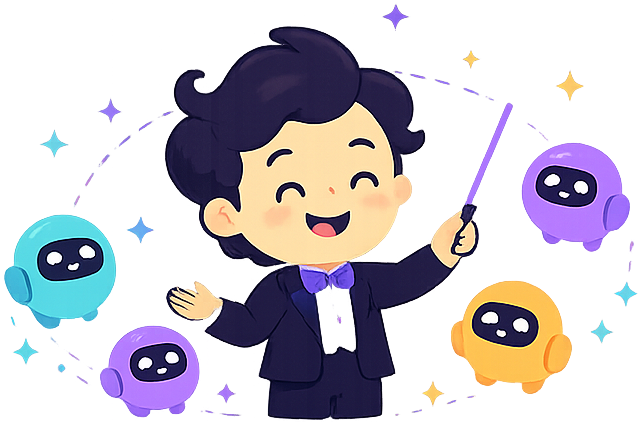

<!DOCTYPE html>
<html lang="pt-BR">
<head>
<meta charset="UTF-8">
<meta name="viewport" content="width=device-width, initial-scale=1.0">
<title>Batuta — Criação AI-first</title>
<link rel="preconnect" href="https://fonts.googleapis.com">
<link rel="preconnect" href="https://fonts.gstatic.com" crossorigin>
<link href="https://fonts.googleapis.com/css2?family=Inter:wght@400;500&family=Bricolage+Grotesque:opsz,wght@12..96,500;12..96,600&display=swap" rel="stylesheet">
<style>
  *{box-sizing:border-box;margin:0;padding:0}
  html,body,#root{height:100%;}
  body{
    font-family:'Inter',system-ui,sans-serif;
    color:#1A1730; background:#FAFAF7;
    -webkit-font-smoothing:antialiased; text-rendering:optimizeLegibility;
    overflow:hidden;
  }
  #root{min-width:1024px;}

  /* buttons */
  .btn-primary{
    display:inline-flex;align-items:center;gap:8px;background:#6D4AFF;color:#fff;border:none;
    border-radius:6px;padding:0 16px;height:40px;font:500 14px/1 'Inter',sans-serif;cursor:pointer;
    transition:background .15s, transform .1s; white-space:nowrap;
  }
  .btn-primary:hover{background:#5A3FE0;}
  .btn-primary:active{transform:translateY(1px);}
  .btn-ghost{
    display:inline-flex;align-items:center;gap:8px;background:transparent;color:#1A1730;
    border:1px solid #E8E6F0;border-radius:6px;padding:9px 14px;font:500 13.5px/1 'Inter',sans-serif;cursor:pointer;transition:background .15s,border-color .15s;
  }
  .btn-ghost:hover{background:#FAFAF7;border-color:#D6D3E8;}

  .chip-btn{
    background:#fff;border:1px solid #D6D3E8;color:#3D2A99;border-radius:999px;
    padding:9px 15px;font:500 13.5px/1.3 'Inter',sans-serif;cursor:pointer;text-align:left;
    transition:border-color .15s, background .15s, color .15s; max-width:100%;
  }
  .chip-btn:hover{border-color:#6D4AFF;background:#F4F1FE;}

  .nav-item:hover{background:rgba(255,255,255,.07)!important;color:#fff!important;}
  .nav-sub:hover{background:rgba(255,255,255,.06)!important;color:#fff!important;}
  .nav-sub.active:hover{background:#6D4AFF!important;}
  .rail-item:hover{background:rgba(255,255,255,.08)!important;color:#fff!important;}
  .org-switch:hover{border-color:#D6D3E8;}
  .ctab:hover{color:#1A1730!important;}

  /* animations — resting state is ALWAYS visible (opacity:1); the entrance is a bonus.
     No `both`/`forwards` fill, so a throttled/blurred iframe never leaves content hidden. */
  @keyframes spin{to{transform:rotate(360deg)}}
  .rise{animation:rise .42s cubic-bezier(.2,.7,.3,1);}
  @keyframes rise{from{transform:translateY(9px)}to{transform:none}}
  .td{width:7px;height:7px;border-radius:50%;background:#B7A8F0;display:inline-block;animation:td 1.1s infinite ease;}
  @keyframes td{0%,65%,100%{transform:translateY(0);opacity:.5}32%{transform:translateY(-5px);opacity:1}}
  .drawer-in{animation:drawer .28s cubic-bezier(.2,.7,.3,1);}
  @keyframes drawer{from{transform:translateX(34px);opacity:0}to{transform:none;opacity:1}}
  .toast-in{animation:toast .32s ease;}
  @keyframes toast{from{transform:translateY(14px);opacity:0}to{transform:none;opacity:1}}

  /* scrollbars */
  ::-webkit-scrollbar{width:11px;height:11px;}
  ::-webkit-scrollbar-thumb{background:#E0DDF0;border-radius:99px;border:3px solid transparent;background-clip:content-box;}
  ::-webkit-scrollbar-thumb:hover{background:#D0CCE6;background-clip:content-box;}
  ::-webkit-scrollbar-track{background:transparent;}

  input::placeholder{color:#A09DB8;}
  button:focus-visible, input:focus-visible, a:focus-visible{outline:2px solid #6D4AFF;outline-offset:2px;}

  @media (prefers-reduced-motion: reduce){
    .rise,.drawer-in,.toast-in,.td{animation:none!important;}
  }
</style>
</head>
<body>
<div id="root"></div>

<template id="__bundler_thumbnail">
  <svg viewBox="0 0 100 100" xmlns="http://www.w3.org/2000/svg">
    <rect width="100" height="100" rx="22" fill="#1A1730"/>
    <rect x="34" y="62" width="40" height="7" rx="3.5" transform="rotate(-43 34 62)" fill="#6D4AFF"/>
    <circle cx="66" cy="34" r="5" fill="#F5C44A"/>
  </svg>
</template>

<script src="https://unpkg.com/react@18.3.1/umd/react.development.js" integrity="sha384-hD6/rw4ppMLGNu3tX5cjIb+uRZ7UkRJ6BPkLpg4hAu/6onKUg4lLsHAs9EBPT82L" crossorigin="anonymous"></script>
<script src="https://unpkg.com/react-dom@18.3.1/umd/react-dom.development.js" integrity="sha384-u6aeetuaXnQ38mYT8rp6sbXaQe3NL9t+IBXmnYxwkUI2Hw4bsp2Wvmx4yRQF1uAm" crossorigin="anonymous"></script>
<script src="https://unpkg.com/@babel/standalone@7.29.0/babel.min.js" integrity="sha384-m08KidiNqLdpJqLq95G/LEi8Qvjl/xUYll3QILypMoQ65QorJ9Lvtp2RXYGBFj1y" crossorigin="anonymous"></script>

<script type="text/babel" src="tweaks-panel.jsx"></script>
<script type="text/babel" src="app-icons.jsx"></script>
<script type="text/babel" src="app-data.jsx"></script>
<script type="text/babel" src="app-creation.jsx"></script>
<script type="text/babel" src="app-dashboard.jsx"></script>
<script type="text/babel" src="app-execution.jsx"></script>
<script type="text/babel" src="app-companion.jsx"></script>
<script type="text/babel" src="app-shell.jsx"></script>

<script type="text/babel">
  const { useState: useStateApp } = React;
  const TWEAK_DEFAULTS = /*EDITMODE-BEGIN*/{
    "mascote": true
  }/*EDITMODE-END*/;

  function Placeholder({ label }) {
    return (
      <div style={{ flex: 1, overflowY: 'auto', background: '#FAFAF7', display: 'flex' }}>
        <div style={{ margin: 'auto', textAlign: 'center', padding: 40, maxWidth: 420 }}>
          
          <div style={{ fontSize: 19, fontWeight: 500, color: '#1A1730', marginTop: 8, fontFamily: "'Bricolage Grotesque',sans-serif" }}>{label}</div>
          <p style={{ fontSize: 14, color: '#6B6880', marginTop: 8, lineHeight: 1.55 }}>Esta área existe no Batuta. Neste protótipo foquei na criação AI-first, no time, na inspeção de execução e na IA companheira — desenho “{label}” quando você quiser.</p>
        </div>
      </div>
    );
  }

  function App() {
    const [t, setTweak] = useTweaks(TWEAK_DEFAULTS);
    const [screen, setScreen] = useStateApp('dashboard');
    const [exec, setExec] = useStateApp(null);
    const [agent, setAgent] = useStateApp(null);

    const go = (s) => { setAgent(null); setScreen(s); };

    let content;
    if (screen === 'criar') content = <CreationFlow showMascot={t.mascote} />;
    else if (screen === 'dashboard') content = <Dashboard onOpenExecution={(e) => { setExec(e); go('execucao'); }} onOpenCompanion={() => go('companheira')} onAgent={setAgent} />;
    else if (screen === 'execucao') content = <ExecutionInspection exec={exec} onBack={() => go('dashboard')} />;
    else if (screen === 'companheira') content = <CompanionScreen />;
    else if (typeof screen === 'string' && screen.startsWith('placeholder:')) content = <Placeholder label={screen.slice(12)} />;
    else content = <Dashboard onOpenExecution={(e) => { setExec(e); go('execucao'); }} onOpenCompanion={() => go('companheira')} onAgent={setAgent} />;

    return (
      <div style={{ height: '100%', position: 'relative' }}>
        <ShellSidebar screen={screen} onNavigate={go}>
          {content}
        </ShellSidebar>
        <AgentDrawer a={agent} onClose={() => setAgent(null)} />
        <TweaksPanel title="Tweaks">
          <TweakSection label="Boas-vindas" />
          <TweakToggle label="Mascote nos estados iniciais" value={t.mascote}
            onChange={(v) => setTweak('mascote', v)} />
        </TweaksPanel>
      </div>
    );
  }

  ReactDOM.createRoot(document.getElementById('root')).render(<App />);
</script>
</body>
</html>
